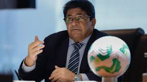

De acordo com o portal, a cúpula da “ESPN” foi procurada pela direção da CBF, que exigiu providências. A diretoria da emissora teria se irritado ao não ter sido comunicada previamente de que o conteúdo do programa, com críticas, iria ao ar.
O afastamento se deu na terça, mas “o mais provável” é que os jornalistas sejam reintegrados já nesta quinta (10).O “UOL” lembra que a “ESPN” negociou com a CBF uma parceria comercial pela transmissão da Série B do Campeonato Brasileiro. As assessorias de imprensa da CBF e da emissora ainda não se pronunciaram sobre a questão.